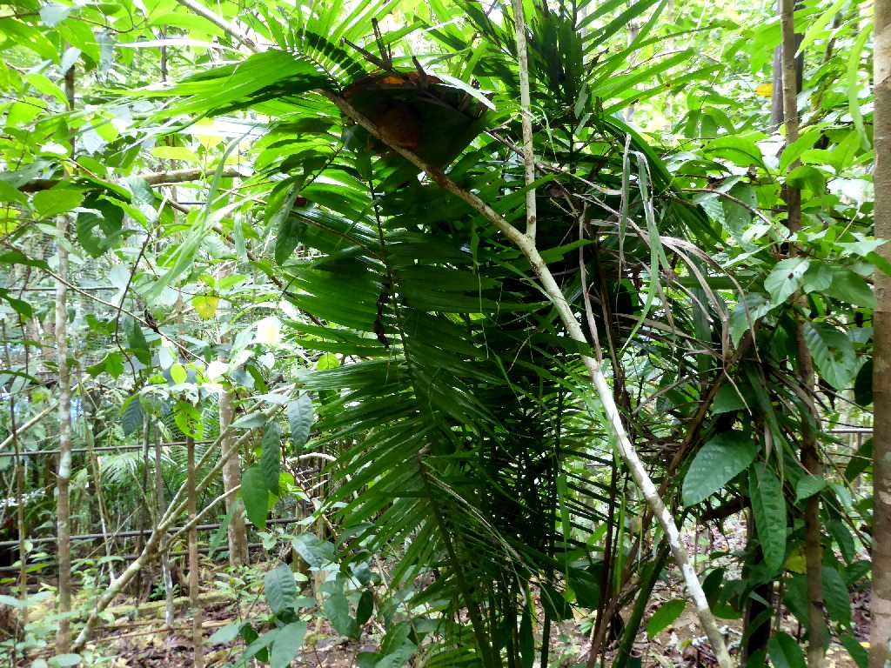
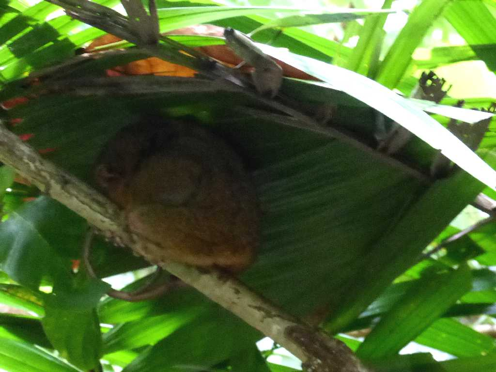
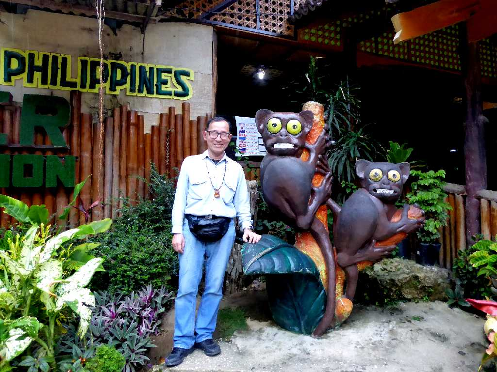
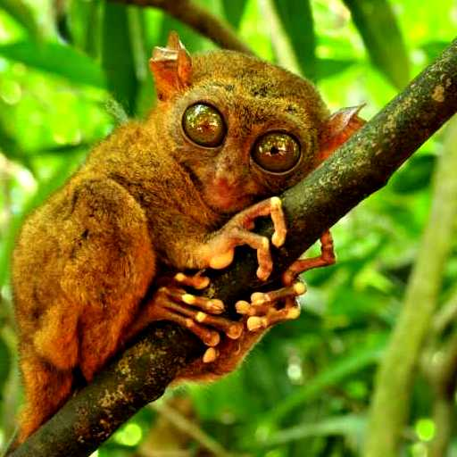
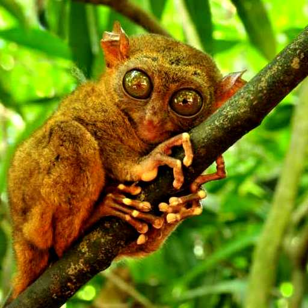
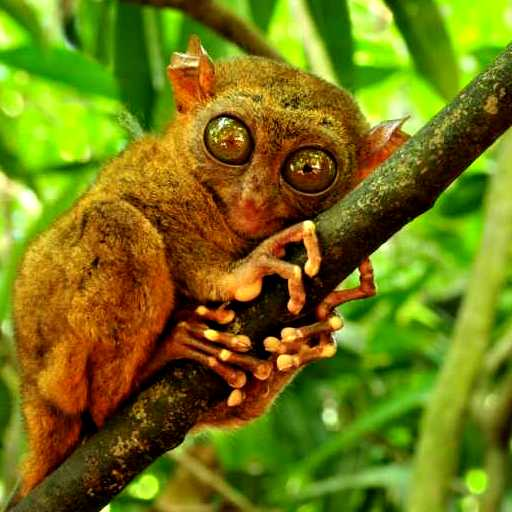
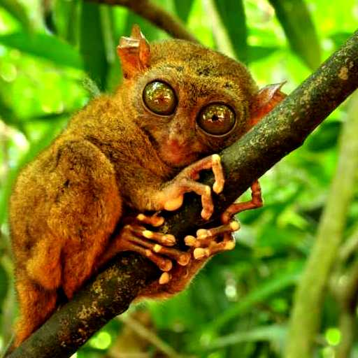
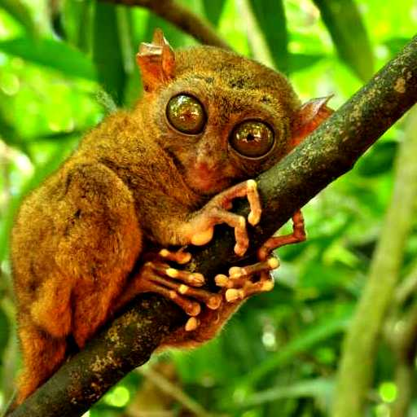

Tarsier Conservation Area Bohol Island
ボホール島に生息する世界最小のメガネザルと云われるターシャ観察区域

Sleeping Tarsier Conservation Area
ターシャは夜行性のため昼間は睡眠中で夜に小動物を捕食する

January 21 2019 Tarsier Conservation Area Bohol Island

Banknote Tarsier Bohol
 


